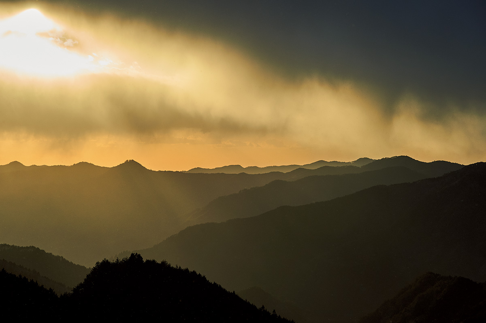
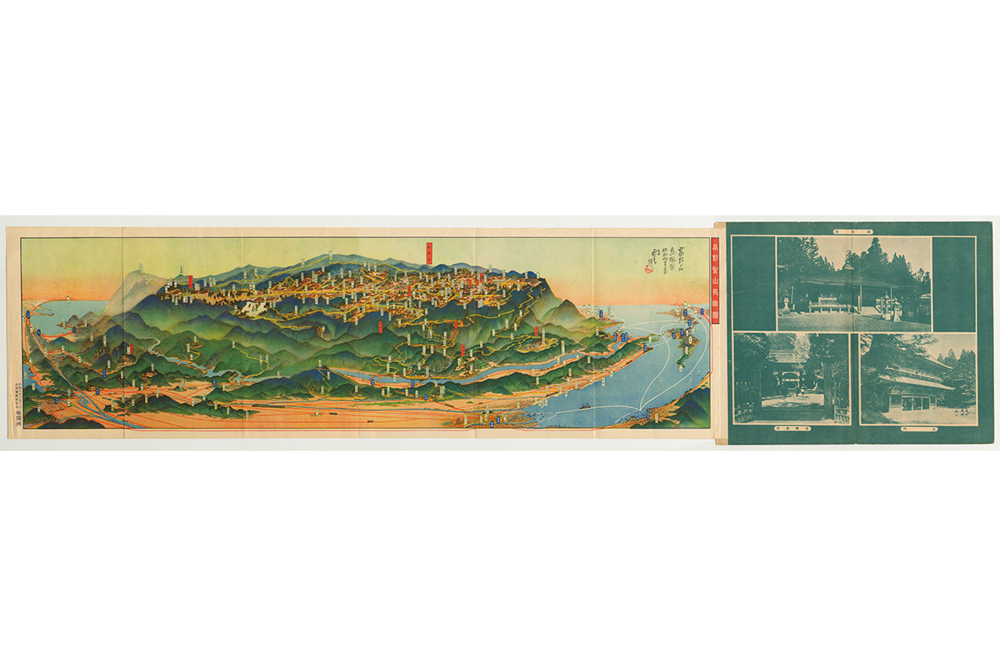
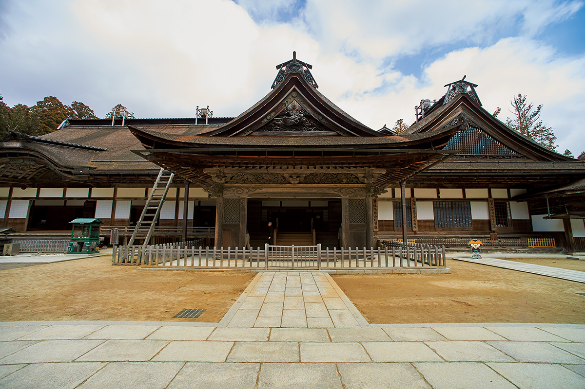
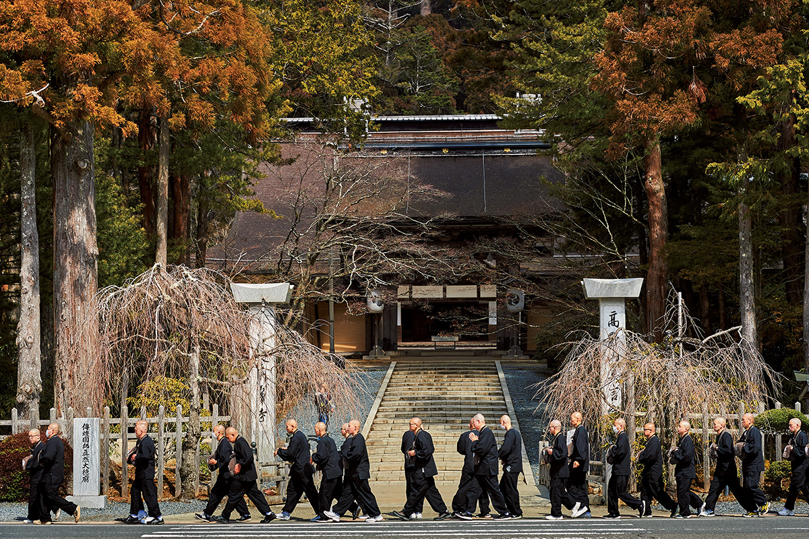
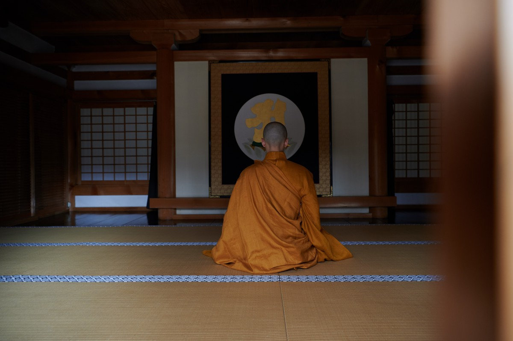
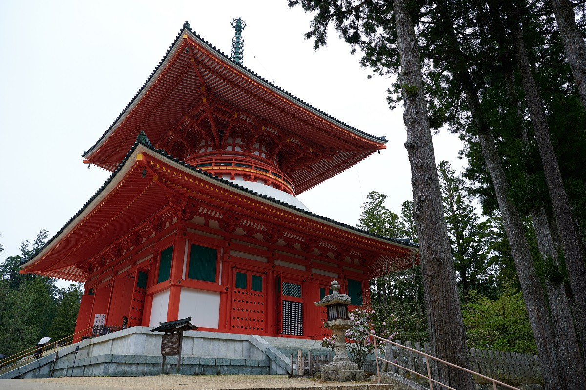
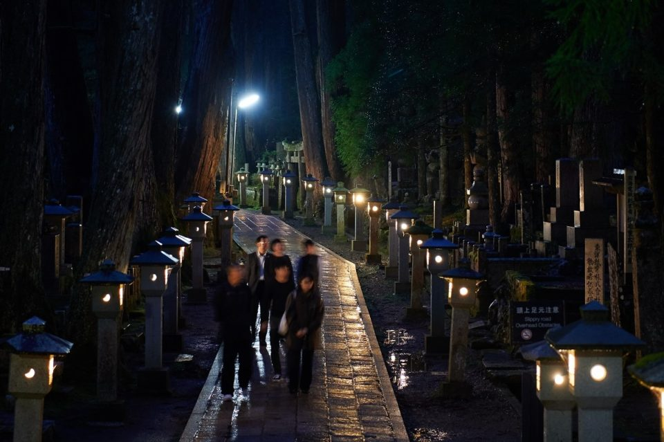
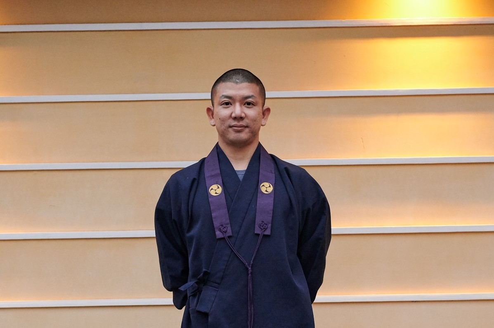
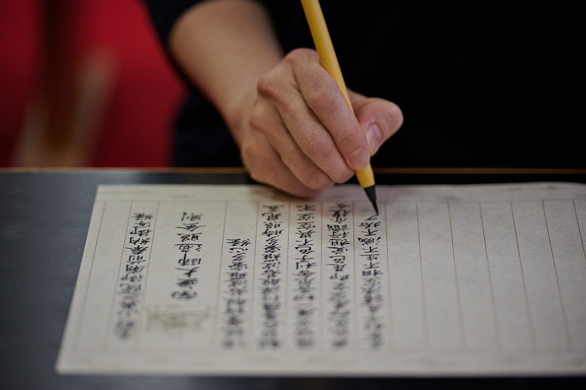
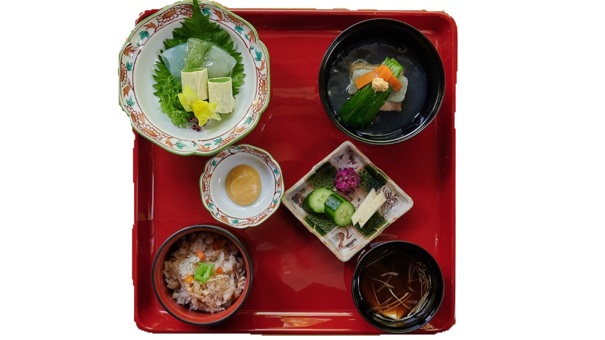

Префектура Вакаяма · гора Коя · история и паломничество
Гора Коя: почему Кукай выбрал горную глушь и как храмовый город выглядит ночью

На севере префектуры Вакаяма, среди лесистых хребтов, лежит город, где на каждом шагу храм. Двенадцать веков назад его заложил монах Кукай, и чтобы понять гору Коя, стоит пройти по ней дважды: днём и в полной темноте.
История
Не гора, а храм
Многие думают, что Коя это название горы. На самом деле так называют сразу три вещи: храм Кондзобудзи (полное имя которого начинается со слов «гора Коя»), горную котловину на высоте около 850 метров и весь город, который в ней вырос. Котловина тянется на 5,5 км с запада на восток и на 2,2 км с севера на юг. Когда-то здесь стояло больше 300 храмов, к 2020 году их осталось 117, а между ними расположились школы, больница и обычные жилые дома.
Кукай выстроил для своего учения две опоры. Храм Тодзи в столице Киото стал местом, где эзотерическое учение преподавали, а Коя местом, где его постигали в медитации. Здесь, вдали от городской суеты и мирских обязательств, монах мог отрешиться от времени и пространства и раствориться в окружающей природе.

Говорят, что Коя окружена «восемью лепестками внутри и восемью снаружи». Территорию вокруг главного храмового комплекса обступают восемь невысоких вершин, а за ними второе кольцо из восьми гор высотой около 1000 метров. Вместе они напоминают лотосовый трон, символ чистой земли будды.
В 816 году Кукай обратился к императору Сага (786–842, правил в 809–823 годах) с просьбой отдать ему «уединённую равнину в одном дне пути к югу от гор Ёсино и ещё в двух днях к западу». Там он хотел основать главное место практики эзотерического учения, «обитель, где молятся о покое страны и счастье людей». Это место он нашёл ещё в молодости, когда скитался по горам в поисках уединения для аскезы. Вокруг одни хребты, ни одной тропы, по которой ходили бы люди: лучшего места для медитации, по мнению Кукая, нельзя было и придумать.
Стройка
Краудфандинг IX века
Император дал согласие, и Кукай взялся вырубать девственный лес и возводить храмы. Откуда он взял огромные деньги на строительство? Версий много, но одно известно точно: он сам писал влиятельным людям провинции Кии длинные проникновенные письма с просьбой о пожертвованиях. Почти как современный краудфандинг: «Накопим заслуги и вместе придём в чистую землю».
Зимой здесь нередки морозы, а жизнь внизу, в долинах, кажется очень далёкой. Кукай много и деятельно работал в столице, но для сосредоточенной практики ему нужно было тихое место. Его ученики продолжили начатое, и на горе вырос один из главных священных центров Японии.
Сегодня до горы Коя добираются на поезде и фуникулёре, а приезжают сюда паломники и путешественники со всего мира. В 2004 году Коя вошла в список Всемирного наследия ЮНЕСКО.
Кондзобудзи
Вся гора как один храм
Здесь есть выражение «итидзан кэйдай»: вся гора это территория одного храма. Кондзобудзи, по сути, общее имя для всей Кои, взятое из одной из эзотерических сутр. Сегодня это главный храм школы Коясан-Сингон, которому подчиняются более 3600 храмов по всей стране.


На огромной территории Кондзобудзи можно попробовать «адзикан», медитацию на санскритском слоге «А». Он обозначает будду Дайнити, первоисточник вселенной. Слог пишут на свитке, садятся перед ним и стремятся почувствовать единство со вселенной. Монах подробно объясняет, как держать тело и как дышать, и следуя его указаниям, замечаешь, как повседневная суета уходит и в голове становится ясно и спокойно.

Город
Когда закрываются храмы
На горе Коя ночь наступает рано. С тех пор как Кукай основал здесь обитель, прошло больше 1200 лет, и даже воздух в городе кажется другим, не таким, как внизу. Ближе к вечеру, когда храмы закрываются для посетителей, прохожих становится всё меньше, и улицы наполняются тишиной.

Самое торжественное место на горе это Оку-но-ин. Здесь, как верят, Кукай до сих пор жив: он лишь погрузился в долгую медитацию. От моста Ити-но-хаси до его гробницы ведёт дорога длиной около двух километров. По обе её стороны, среди криптомерий, стоят больше десяти тысяч надгробий и памятных ступ: прославленных монахов, князей эпохи воюющих провинций, промышленников XIX и XX веков.
Ночь
Оку-но-ин при свете фонарей

Пройти по этой дороге в темноте и почувствовать Кою глубже предлагает ночная экскурсия по Оку-но-ин. Её запустили в 2011 году, слухи разошлись быстро, и в 2019 году весной и летом гостей порой делили на три группы.
«Вечером на Кое почти всё закрывается, и гостям, особенно иностранным, просто нечем заняться. Мы решили предложить что-то на вечер. Отчасти идея пришла от моего учителя, настоятеля храма Экоин: каждый месяц 20-го числа он водил паломников к гробнице ночью»
основатель ночной экскурсии

В храме Экоин он встречал иностранных гостей и часто слышал простые вопросы. Почему на стольких каменных статуях красные нагрудники? Что это за ворота перед могилой? Желание ответить на них тоже подтолкнуло к созданию экскурсии. Объясняя, что значат статуи Дзидзо или ворота-тории, он хочет помочь людям лучше понять японскую культуру.
В Оку-но-ин растут криптомерии возрастом в несколько сотен лет, и в этом лесу живёт много зверей и птиц. Иногда слышно, как перекликаются летяги. Дорогу освещают только фонари, а летом здесь можно увидеть светлячков.
«Коя и сама по себе место необычное, но ночной Оку-но-ин это нечто совсем особенное»
основатель ночной экскурсии
Некоторые гости так и не могут забыть эту прогулку и возвращаются сюда снова, из-за океана. В 2019 году около 60% участников были иностранцами, поэтому группы часто делят на английскую и японскую. Все гиды, включая основателя, прошли обучение и имеют право водить экскурсии по территории Кондзобудзи. Это монахи, которые живут на Кое, и рассказывают они о ней изнутри.
Соседи по кладбищу и семь чудес
Среди бесчисленных надгробий встречаются могилы полководцев, которые при жизни были врагами. Могилы Кэнсина Уэсуги (1530–1578) и Сингэна Такэды (1521–1573), двух князей, много лет воевавших друг с другом, стоят друг напротив друга по разные стороны дороги.
«Прямо как в битве при Каванакадзиме»
основатель ночной экскурсии
За час прогулки гид рассказывает и о «семи чудесах Кои».
«Есть поверье: если встать у колодца Сугатами и не увидеть в воде своего отражения, умрёшь в течение трёх лет. Объясняют это по-разному. На ночной экскурсии мы к нему, кстати, не подходим: слишком темно»
основатель ночной экскурсии
Гиды шутят и по ходу показывают, на что посмотреть и что почувствовать. Но главное, что они непременно хотят передать, это сам Кукай и его учение.
«Говорят, О-дайси-сан сравнивал луну, которую изображают и на фонарях, с человеческим сердцем. По природе оно светлое, круглое и прозрачное, но иногда его закрывают облака, и оно будто убывает. Он учил, как важно замечать это в себе. Без О-дайси-сана не было бы Кои. Его учение хранит это место больше тысячи лет, и нам хочется, чтобы здесь гости почувствовали его рядом»
основатель ночной экскурсии
Утро
Тот же путь при дневном свете
Основатель экскурсии советует пройти по Оку-но-ин и днём.
«Днём здесь совсем другое настроение. Если увидеть и то, и другое, Коя раскроется гораздо глубже»
основатель ночной экскурсии
Особенно хорош ранний час. Каждое утро Кукаю приносят еду: этот обряд называется «сёдзингу», и в звенящей тишине монахи торжественно несут подношение к Залу фонарей. Сцена похожа на старинную картину. Утренняя служба и короткие «практики» в храмах доступны тем, кто остался на горе на ночь и встретил здесь рассвет.
Одна из таких практик «сякё», переписывание сутры. Кукай учил, что тот, кто читает, хранит и почитает «Сутру сердца», избавляется от страданий и обретает радость. В ней всего 262 знака, но если выводить каждый с полным вниманием, посторонние мысли постепенно уходят, и час пролетает в приятной сосредоточенности.


Ночная экскурсия по Оку-но-ин
- Адрес
- префектура Вакаяма, уезд Ито, Коя, Коясан, 497
- Телефон
- +81 90-2106-1146
- Часы работы
- ежедневно с 19:00, в непогоду отменяется, уточняйте заранее
- Цены / Вход
- 2 500 иен, при бронировании онлайн 2 300 иен
- Как добраться
- сбор у храма Экоин, через Оку-но-ин к гробнице Кукая, окончание у зала Гокусё; около 2 км в одну сторону
- Сайт
- awesome-tours.jp
Фото: Кадзума Такигава.